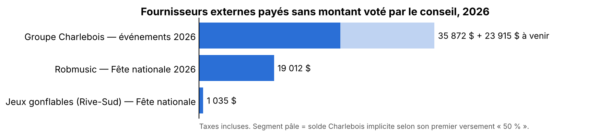
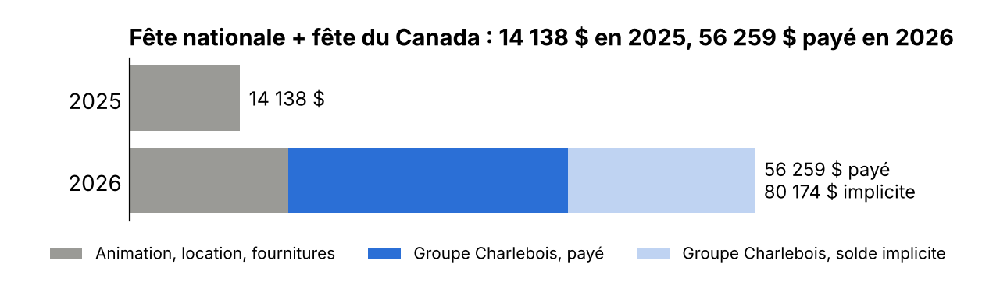
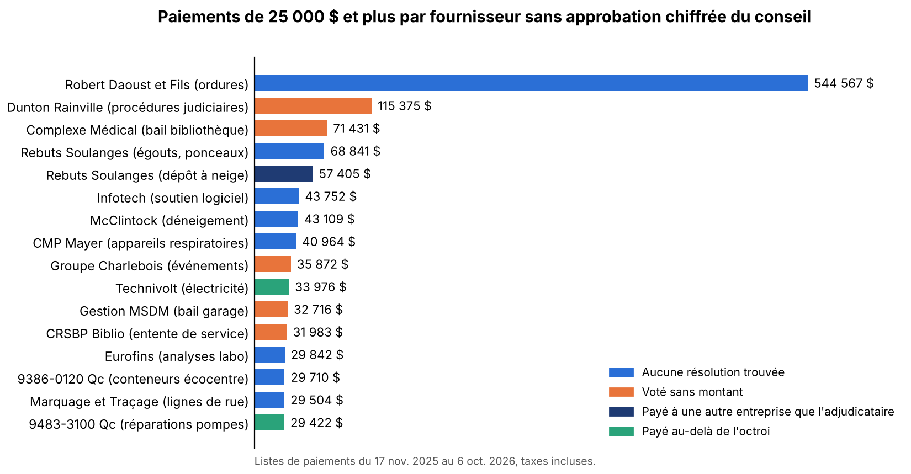
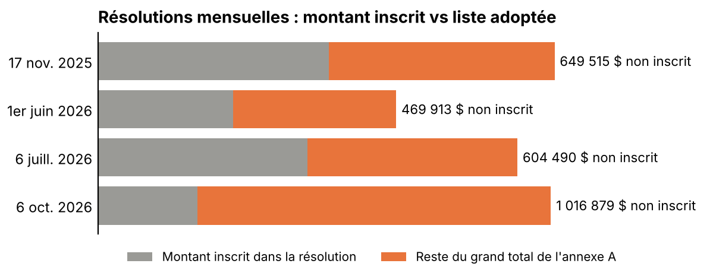

Préparé par The Ormstown Observer à partir des procès-verbaux et des listes de paiements de la Municipalité · 20 novembre 2026 · Page non répertoriée : accessible par lien seulement.
Partie 1
Dépenses liées aux événements communautaires : fournisseurs externes payés sans montant approuvé par le conseil, 2025-2026
Note d'information pour le caucus du conseil · 18 novembre 2026 · Compilée à partir des procès-verbaux et des listes de paiements (annexe A) de la Municipalité d'Ormstown (janv. 2025 → 6 oct. 2026). Montants taxes incluses. La liste de paiements du 2 novembre 2026 n'est pas encore publiée.
En 2026, 55 918,95 $ ont été versés à trois fournisseurs externes pour des événements. Le conseil n'a voté aucun montant pour aucun d'eux. Le plus important, Groupe Charlebois inc., a obtenu son mandat sans prix. Les aides financières aux organismes locaux, elles, sont votées une à une, avec le bénéficiaire, le montant et l'événement.
59 787 $Valeur du contrat de Groupe Charlebois implicite selon son propre premier versement « 50 % ». Le conseil n'a voté aucun montant.
×4Fête nationale + fête du Canada : 14 138 $ (2025) → 56 259 $ payés (2026), avant le solde de Charlebois.
0Résolution sur la Fête citoyenne du 26 septembre, animée par une entreprise de Montréal.

Source : listes de paiements (annexe A), 1er juin – 6 oct. 2026 (Charlebois 1er juin + 3 août; Robmusic 1er juin + 6 juillet; jeux gonflables 6 juillet); rés.
25-12-377.
Contrats octroyés sans montant, ou sans aucune résolution
| Fournisseur | Objet | Résolution | Montant voté | Payé au 6 oct. 2026 |
|---|
| Groupe Charlebois inc. | Organisation des événements municipaux 2026 | 25-12-377 (17 déc. 2025, séance extraordinaire) | Aucun | 35 872,20 $
(59 787,00 $ implicite) |
| Robmusic | Animation, Fête nationale | Aucune | — | 4 236,83 $ (2025)
19 011,98 $ (2026) |
| 9339-0953 Québec inc. (Rive-Sud) | Jeux gonflables, Fête nationale | Aucune | — | 1 626,90 $ (2025)
1 034,77 $ (2026) |
| Animation Concept (Montréal) | Jeux, DJ, animateurs : Fête citoyenne, 26 sept. 2026 (constaté sur place) | Aucune : pas de résolution sur l'événement | — | Absent de toute liste municipale |
Fête nationale + fête du Canada : l'organisateur externe a quadruplé le coût

Source : listes de paiements (annexe A), 2 juin – 4 août 2025 et 1er juin – 3 août 2026.
En 2025, la Municipalité a retenu elle-même cinq artistes et fournisseurs, sans organisateur externe. En 2026, elle a aussi payé Groupe Charlebois, et les coûts directs ont quand même augmenté de 44 %. Le 17 décembre 2025, le soir même de l'octroi du mandat à Charlebois, la résolution 25-12-367 a réaffecté 70 784,37 $ de salaires non dépensés du service des loisirs en 2025.
Les chiffres de Charlebois ne concordent pas. La liste du 1er juin 2026 présente le premier versement, 29 893,50 $, comme « 1er vers 50% ». Cela suppose un contrat de 59 787,00 $ taxes incluses (exactement 52 000 $ avant taxes), dont 23 914,80 $ restent à verser. Le versement du 3 août, 5 978,70 $, est présenté comme « 20% », mais correspond exactement à 10 %. Les deux paiements étaient déjà émis lorsque le conseil a approuvé les listes. L'entente n'est pas publique.
L'événement de septembre que le conseil n'a jamais vu. La Fête citoyenne (26 septembre, parc Lindsay-Cullen) ne fait l'objet d'aucune résolution dans les procès-verbaux du 3 août au 6 octobre, ni d'aucun paiement sur les listes du 8 septembre et du 6 octobre. Une entreprise de Montréal, Animation Concept, a fourni les jeux, les DJ et les animateurs. À l'inverse, le mandala géant des Journées de la culture, beaucoup plus modeste, a fait l'objet de sa propre résolution logistique (
26-09-254). L'entreprise a probablement été payée par Groupe Charlebois, ou sa facture figurera sur la liste du 2 novembre.
Le traitement des organismes locaux, à titre de comparaison
Chaque aide financière à un organisme local nomme le bénéficiaire, le montant et, dans la plupart des cas, l'événement :
| Événement ou activité | Organisme | Résolution | Voté | Payé |
|---|
| Expo d'Ormstown 2026 | Livestock Breeders Assoc. | 26-04-126 | 5 000 $ | 5 000,00 $ |
| Forum du Jour de la Terre 2026 (déchiquetage) | Ambioterra, fiduciaire | 26-03-076 | 1 416 $ | 1 416,00 $ |
| Salon des aînés du HSL, 19 sept. 2026 | Projet Communic-Action, fiduciaire | 26-08-231 | 750 $ | pas encore inscrit |
| Circuit des courses de chevaux, étape d'Ormstown, 19 sept. 2026 | CRCCQ | 26-08-232 | 500 $ | 500,00 $ |
| Célébrations du 65e anniversaire | Club Lions Ormstown | 26-09-257 | 500 $ | pas encore inscrit |
| Guignolée des Fêtes 2025 | Club Lions Ormstown | 25-12-380 | 1 500 $ | 1 500,00 $ |
| Grande Marche Pierre Lavoie, 19 oct. 2025 | Une Affaire de Famille | 25-10-299 | 1 680 $ | 1 680,00 $* |
* Compensé par une subvention de 2 000 $ du Grand Défi. Une Affaire de Famille a aussi été sollicitée pour le mandat des événements 2026 (
25-12-377); la résolution ne précise pas si elle a soumis un prix.
Questions que le conseil pourrait poser
- Quels sont la valeur totale, l'échéancier de paiement et la liste des événements de l'entente avec Groupe Charlebois? Charlebois a-t-il confié une partie du mandat à Animation Concept?
- Qui a approuvé les contrats de Robmusic et des fournisseurs de la Fête citoyenne, et en vertu de quel règlement de délégation?
- Une Affaire de Famille, ou un autre organisme local, a-t-il soumis un prix pour le mandat des événements 2026?
- Le conseil exigera-t-il un budget voté pour chaque événement majeur en 2027? Le nouveau règlement sur la gestion contractuelle (129-2026) en traitera-t-il?
Sources : voir la liste complète des procès-verbaux et autres sources à la
fin de la page. Les numéros de résolution renvoient au procès-verbal de leur adoption.
Partie 2
Dépenses de 25 000 $ et plus sans résolution directe du conseil, nov. 2025 – oct. 2026
Note d'information · 20 novembre 2026 · Compilée à partir des procès-verbaux et des listes de paiements (annexe A) de la Municipalité d'Ormstown : toutes les listes adoptées du 17 nov. 2025 au 6 oct. 2026 (2 576 lignes, 11,45 M$), comparées à chaque autorisation du conseil depuis janv. 2025. Montants taxes incluses. Le procès-verbal du 2 nov. 2026 n'est pas encore publié.
Environ 1,24 million $ ont été versés à 16 fournisseurs, chacun payé 25 000 $ ou plus, sans résolution nommant ce fournisseur et un montant. Dans un cas, le conseil a choisi une entreprise et une autre a été payée. Par ailleurs, quatre résolutions mensuelles de paiement n'inscrivent qu'une partie de la liste qu'elles adoptent : 2,74 millions $ restent hors du montant inscrit.
1,24 M$Versés à 16 fournisseurs (25 000 $ et plus chacun) sans approbation chiffrée du conseil.
57 405 $Travaux au dépôt à neige octroyés à E360 Solutions, payés à Services de Rebuts Soulanges.
2,74 M$Absents des montants inscrits dans 4 des 12 résolutions mensuelles de paiement.

Quatre types d'écart
| Type | Signification | Fournisseurs | Payé |
|---|
| Payé à une autre entreprise | Le conseil a octroyé le contrat à une firme; une autre a été payée | Services de Rebuts Soulanges (dépôt à neige) | 57 404,62 $ |
| Aucune résolution trouvée | Aucun octroi ni autorisation dans les procès-verbaux 2025-2026 | Robert Daoust et Fils, Rebuts Soulanges (autres travaux), Infotech, McClintock, CMP Mayer, Eurofins, 9386-0120 Qc, Marquage et Traçage | 830 288,36 $ |
| Voté sans montant | Une résolution existe, mais sans prix, plafond ni loyer | Dunton Rainville (procédures judiciaires), Complexe Médical (bail bibliothèque), Groupe Charlebois, Gestion MSDM (bail garage), CRSBP | ≈ 287 400 $ |
| Payé au-delà de l'octroi | Les paiements dépassent les résolutions trouvées, taxes incluses | Technivolt, 9483-3100 Québec inc. | ≈ 63 400 $ |
Le dépôt à neige : octroyé à une entreprise, payé à une autre
Le 17 novembre 2025, le conseil a octroyé la vidange complète du dépôt à neige Wellington à
E360 Solutions pour
41 332,49 $, taxes et contingence incluses (
25-11-315). E360 n'a reçu aucun paiement.
Services de Rebuts Soulanges inc. a plutôt été payée pour le « nettoyage dépôt à neige » : 23 224,96 $ (17 nov. 2025), puis 21 519,11 $ et 12 660,55 $ (19 janv. 2026), soit
57 404,62 $ au total, 16 072,13 $ de plus que l'octroi. À vérifier d'abord : E360 est-il un nom commercial de Services de Rebuts Soulanges?
Principaux paiements sans résolution trouvée
| Fournisseur | Objet | Payé, nov. 2025 – oct. 2026 | Note |
|---|
| Robert Daoust et Fils inc. | Collecte et élimination des ordures | 544 566,57 $ | Environ 1,1 M$ par année. Octroi probablement antérieur à 2025 : vérifier au SEAO. |
| Services de Rebuts Soulanges inc. | Nettoyage d'égouts, de postes de pompage et de ponceaux | 68 840,86 $ | 16 factures |
| Infotech (2547-0857 Québec inc.) | Soutien et modules logiciels | 43 752,33 $ | Contrat de soutien trimestriel |
| Entreprises McClintock | Déneigement, déc. 2025 – févr. 2026 | 43 109,26 $ | 10 factures |
| CMP Mayer inc. | Appareils respiratoires et cylindres (pompiers) | 40 964,12 $ | Une facture de 34 447,12 $ (6 oct.) |
| Marquage et Traçage du Québec | Lignes de rue | 29 504,02 $ | Une facture; 32 769,94 $ en 2025, aucun octroi |
Approbations mensuelles qui n'inscrivent qu'une partie de la liste

Chaque mois, le conseil adopte « la liste en annexe A ». Lors de ces quatre séances, le montant inscrit dans la résolution (25-11-304, 26-06-150, 26-07-187, 26-10-268) ne correspond qu'à un bloc de cette liste. Les huit autres séances inscrivent le grand total.
Avant de conclure. Certains contrats ont pu être octroyés avant 2025, surtout la collecte des ordures. Vérifier le SEAO et la liste municipale des contrats de plus de 25 000 $ (Code municipal, art. 961.3 à 961.4). Le règlement de délégation peut permettre au personnel d'octroyer certains achats sans résolution. Le projet de règlement 129-2026 revoit justement ces règles.
Questions que le conseil pourrait poser
- Pourquoi Services de Rebuts Soulanges a-t-elle été payée pour des travaux au dépôt à neige octroyés à E360 Solutions, et 16 072 $ de plus que l'octroi?
- En vertu de quelle résolution ou de quel contrat la collecte des ordures, le déneigement, le marquage des rues et le soutien logiciel sont-ils payés? Quand ces contrats prennent-ils fin?
- Quels sont le loyer, la durée et le bailleur des baux de la bibliothèque et du garage, et le plafond du mandat juridique en procédures judiciaires (25-10-289)?
- Les résolutions mensuelles de paiement inscriront-elles désormais le grand total de l'annexe A?
- Le règlement 129-2026 exigera-t-il une résolution chiffrée au-delà de 25 000 $ par fournisseur et par année?